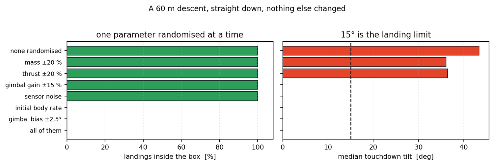
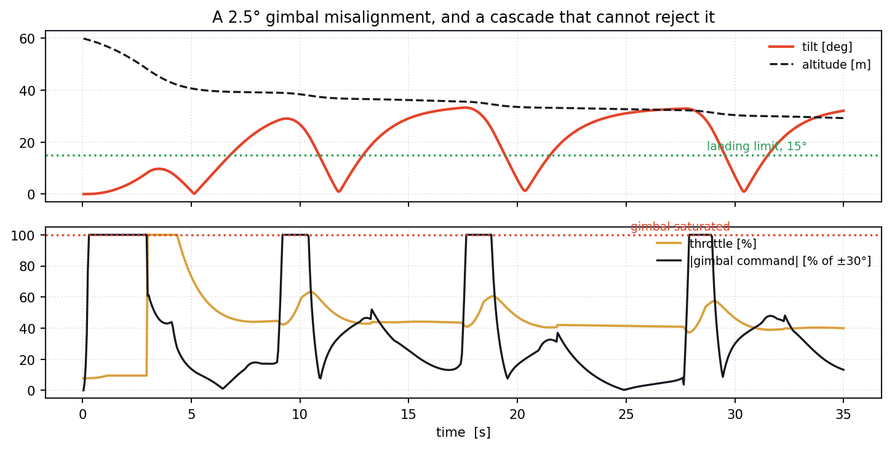
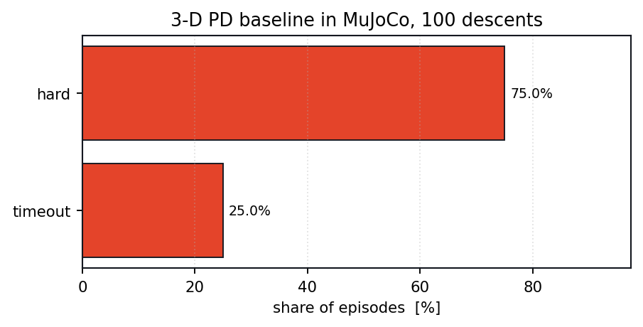
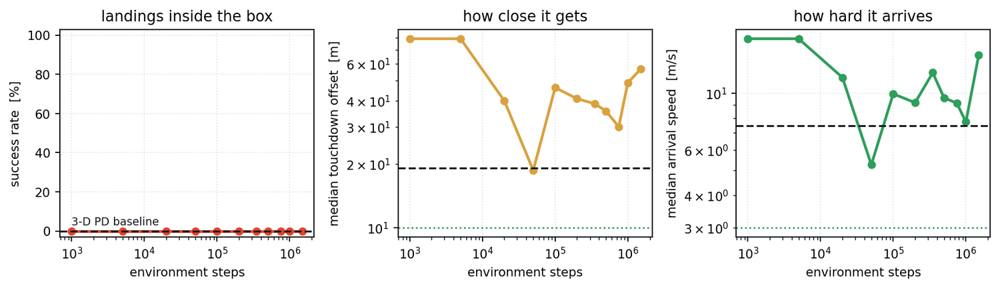
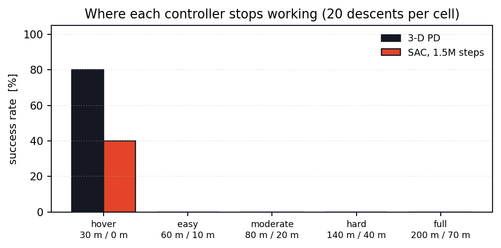
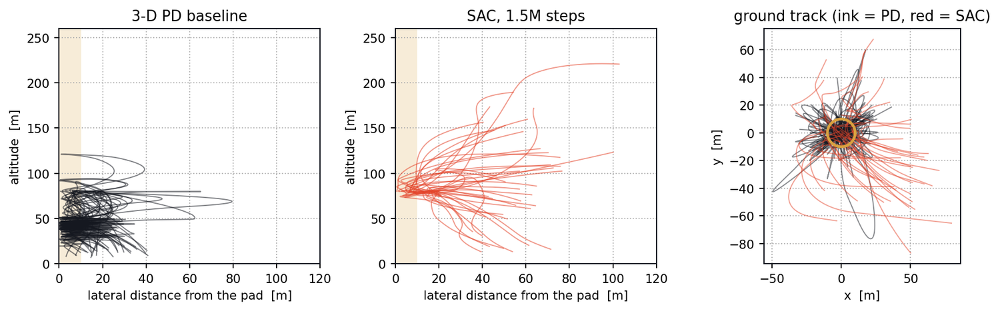

Reinforcement learning ◆ Guidance & control ◆ MuJoCo ◆ NYU ROB-GY 7863 ◆ 2025
TINTIN
Thrust-Integrated Neural Touchdown: a 5,000-tonne lunar lander, 100 m long, one gimbaled engine. Landings below — then fly it yourself.
Six touchdowns, cut together. The vehicle is the rocket from The Adventures of Tintin, at 5,000 t and 100 m; every arrival below is a real descent flown in MuJoCo.
Every clip is one real MuJoCo descent of the 5,000-tonne vehicle that ended on the pad — no scripted trajectories, live telemetry in the corner, playback speed in the top right. Clips that share a starting condition are the same descent from a different camera. Filter by controller or by camera.
Loading the landings…
How many attempts each of these took, straight from the render log: 30 m hover 2 landings in 2 tries, 45 m 2 in 3, 6–10 m downrange 2 in 9, 4° of entry tilt 2 in 2 — and 1 m/s of entry speed 1 in 24. Altitude and offset are cheap; arriving with velocity is not. The four SAC clips are the 1.5 M-step policy on the same hover start, where it lands about one attempt in three. One rung further up the ladder nothing lands at all, and that is the interesting part.
The task
One policy sees the state and emits throttle and two gimbal angles — guidance and control as a single map. Burning 4,500 t of 5,000 t changes the plant underneath the controller as it flies.
st = [ p, v, q, ω, m, I ] ut = [ T, θp, θy ] ∈ [−1, 1]3 ṁ = −T / (Isp g0) I(t) = I0 · m(t)/m0
RocketGym. 100 m body, 17 m fin radius, engine 30 m below the centre of mass, inertia diag(1.2×10⁹, 1.2×10⁹, 3.0×10⁷) kg·m² scaling with the mass burnt off, lunar gravity, a fixed pad at the origin.
Given
Position, velocity, attitude, rate
Propellant and mass fraction
Noisy, in 17 numbers
Commanded
Throttle T ∈ [0, 25 MN]
Gimbal pitch θp ∈ ±30°
Gimbal yaw θy ∈ ±30°
Ends when
The mesh touches the pad
Offset > 150 m, ‖v‖ > 100 m/s
Tilt > 120°, or 45 seconds
Fly it yourself
The same vehicle in your browser — 5,000 t, one 25 MN engine on a ±30° gimbal 30 m below the centre of mass — tracking MuJoCo to 1.3 m over a 45 s descent. Fly it, or hand it to the PD or to any SAC checkpoint.
The sandbox
↑↓ throttle ←→ gimbal yaw WS gimbal pitch
— the engine is below the centre of mass, so deflecting it tips the vehicle the other way. You steer by falling sideways.
Drag to orbit, scroll to zoom. Vehicle randomisation resamples mass, propellant, Isp, engine, gimbal gain, a gimbal misalignment up to 2.5° and a small body rate — the envelope the policy trained against. The last two are the ones that matter (why).
Telemetry
What the vehicle is doing, as it does it
Altitude against downrange, speed against descent rate, tilt against gimbal, throttle against propellant — live as it flies.
Run the experiment
100 descents, right now, with whichever pilot you picked
Green lands inside the box — 10 m, 3 m/s, 25°; red does not. The bundle is drawn into the scene above.
Press the button.
Why it stops there
The clips above are hover starts. One rung up the ladder — 60 m, 10 m of offset — both controllers land 0 % of the time. Building the 3-D PD (scripts/tools/pd3d.py) turned up why, and the last two are the ones worth reading.
You cannot tilt a 100 m rocket near the ground. Touchdown height is z = 1.00 + 0.2475 × tilt[°] (R² > 0.999): at 20° a fin hits with the centre of mass 6 m up. Tilt has to be capped by altitude, θ ≤ 4(h − 1.5)°.
You cannot steer while falling. alat = (az + g)·tan θ, so a near-free-fall descent buys no lateral authority at any tilt. Holding hover thrust while there is downrange left took the easy case 10 % → 70 %.
The authority is the tilt cap, not the thrust-to-weight. g·tan(35°) = 1.13 m/s², not 3g·sin(35°) = 2.8. Sizing for 2.0 flew the vehicle through the pad in a limit cycle.
Braking laterally reverses the whole vehicle — about 3 s at zero deceleration — so the approach speed obeys d = v²/2a + v·tlag, not v = √(2ad).
5
Two parameters break it, and neither is the one you would guess
One parameter randomised at a time, 60 m straight down, ten descents each: mass ±20 %, thrust ±20 %, gimbal gain ±15 % and the whole sensor-noise budget each leave it at 10/10. A persistent 2.5° gimbal misalignment takes it to 0/10 (median touchdown tilt 36.1°), and so does an initial body rate of 0.04 rad/s (36.5°). Both are attitude disturbances, and both are tiny.

One parameter at a time, ten descents each. Mass, thrust and sensing are harmless; anything that torques the vehicle is fatal.
6
The gimbal is only as strong as the thrust it deflects
Gimbal torque is τ = L·T·sin θg, proportional to thrust. An efficient descent wants the throttle low — at 8 % throttle the attitude loop has 8 % of its authority and demands three times the torque available. It saturates at ±30°, overshoots, saturates the other way, and the vehicle limit-cycles: tilt sawtoothing 0–33° every eight seconds with the descent stalled at 35 m. Holding a thrust floor fixes the attitude and runs the 45 s clock out instead: 10/10 landings become 1/10. Attitude authority wants thrust; an efficient descent wants none — which is the argument for integrated guidance and control the project is about.

The limit cycle, one descent. Five oscillations, every one past the 15° landing limit, the gimbal command at 100 % saturation on each cycle with the throttle near 40 %. A 2.5° misalignment is doing this.

The 3-D PD on the moderate envelope — 80 m up, 20 m downrange, 3 m/s entry, 10° tilt, 100 randomised descents. All of them reach the ground; none of them lands.
Learning it instead
SAC on the same MuJoCo vehicle, randomised every episode: dry mass ±20 %, propellant ±35 %, Isp ±12 %, engine ±20 %, gimbal gain ±15 %, a permanent gimbal misalignment up to 2.5°, an initial body rate, and noise on what the policy sees. 1.5 M steps, 10 parallel envs.
Three bugs that cost real time →
Hovering paid better than landing. A +0.3 alive bonus and +4 upright made a timeout worth ~19,000 against ~8,300 for landing; success peaked at 20 % and decayed to 6 %. Every shaping term is a penalty now.
Crashing tidily paid too. −300 + 250q scored +450 for a neat crash. Now −400 + 300(q/3): graded, always negative.
The update-to-data ratio was 0.025.train_freq is per-env — 10 envs × 32 is 320 samples per call, and 8 gradient steps against that is one per forty samples. 80 changed the whole curve.
SAC on RocketGym-DR
value
Policy network
[256, 256] MLP
Observation / action
17 / 3
Learning rate
3×10⁻⁴
Batch / buffer
256 / 6×10⁵
γ / τ
0.985 / 0.005
train_freq / gradient_steps
32 / 80
Parallel MuJoCo envs
10
Environment steps
1.5 M, at 20 Hz control
7
It learns to arrive, not to land
Median arrival speed falls from 16.3 m/s at 1 k steps to 5.3 m/s by 50 k, median touchdown offset from 78.9 m to 18.7 m, and success on the curriculum's own conditions peaked at 47.5 % near 750 k. On the fixed held-out envelope it lands 0 % at every checkpoint — so does the PD. 1.5 M steps under this much randomisation is not enough; the report used 5 M on an easier box.

Progress against the baseline. Dashed line is the 3-D PD on the same episodes. Medians are over all episodes, not just successes.

Where both controllers stop. Hover start: PD 80 %, policy 40 %. One rung up — 60 m with 10 m of offset — both go to zero.

What the two actually do. Altitude against remaining downrange for the baseline and the final policy, and the ground tracks with the ±10 m box. The policy's bundle is the tighter one — and still does not close the last few metres.
Reproduce it
Every number and figure on this page regenerates from scratch with fixed seeds, in the project repository.
# everything below runs against the same MuJoCo vehicle
git clone https://github.com/thejerrycheng/space_robot_mujoco
cd space_robot_mujoco
pip install mujoco gymnasium stable-baselines3 torch matplotlib
# the 3-D cascaded PD baseline, Monte Carlo over the evaluation envelope
python scripts/tools/pd3d.py --trials 200
# train SAC with the wide domain randomisation, checkpointing at each stage
OMP_NUM_THREADS=1 python scripts/tools/train_sac_dr.py --name sac_dr --steps 1500000 --envs 10
# evaluate every stage against the baseline, draw the figures,# and export each policy to JSON for the sandbox on this page
python scripts/tools/eval_progress.py --run sac_dr --episodes 120
# cross-check the browser model against MuJoCo
python scripts/tools/validate_js_model.py /tmp/mj_ref.json
The browser model in assets/js/tintin3d.js is a transliteration of the MuJoCo vehicle — same inertia, same RK4 at 100 Hz, the same second-order gimbal servos (ωn = 54.5 rad/s, ζ = 0.30) and the measured tilt-dependent contact height. Replaying identical actions through both, the trajectories stay within 1.29 m over 45 s. Landing clips: scripts/tools/render_landings.py.
Credits
TINTIN was the Project 2 of ROB-GY 7863 at NYU, taught by Prof. Benjamin Rivière. Joint work with Juncheng Zhou — equal contribution. The vehicle geometry is adapted from the rocket in The Adventures of Tintin; the lunar terrain is an imported Unreal Engine asset.
The MuJoCo environment, the SAC/PPO/DQN training, the report and its figures are from the course project. The planar re-implementation, the 500-descent PD study, the gain and envelope sweeps, and the browser sandbox on this page were built afterwards for this write-up.